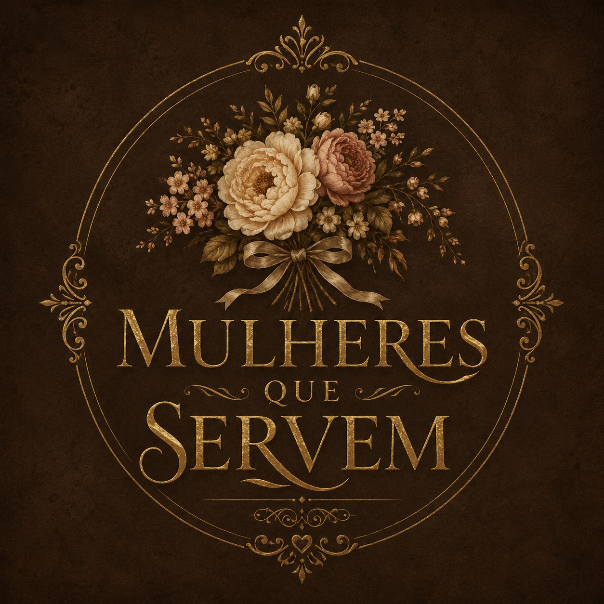
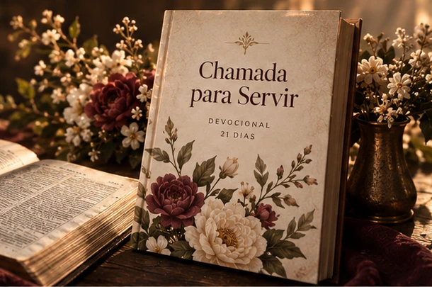
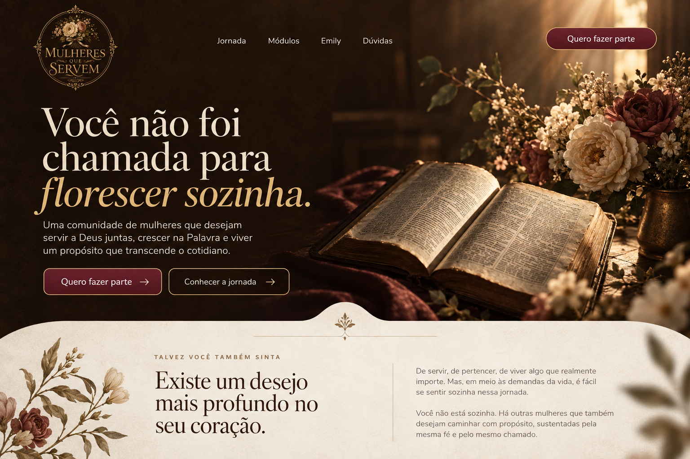
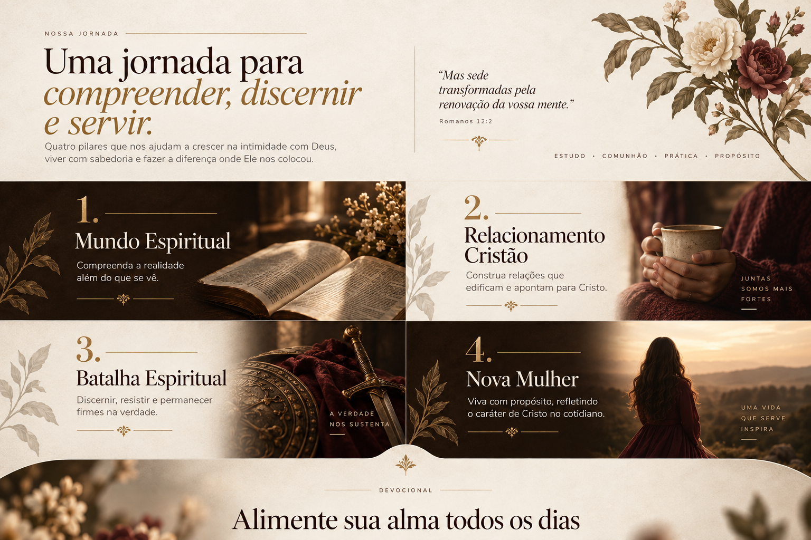
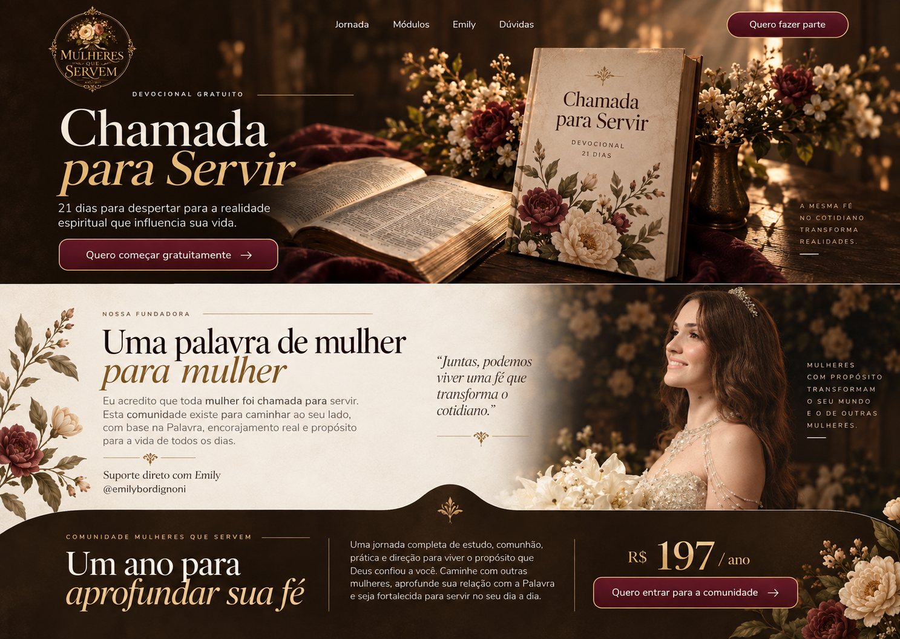

01
Mundo Espiritual
Anjos e demônios, legalidades e portas abertas, pecado, heranças e doenças espirituais.

Quero fazer parteComunidade Mulheres que Servem
Uma comunidade para mulheres que desejam compreender a Palavra com profundidade, amadurecer na fé e viver o propósito que Deus confiou a elas.
Quero fazer parte →Talvez você também sinta
De servir, de pertencer e de viver algo que realmente importe. Em meio às demandas da vida, é fácil se sentir sozinha nessa jornada.
Você não está sozinha. Há outras mulheres que também desejam caminhar com propósito, sustentadas pela mesma fé.
Nossa jornada
Quatro caminhos de crescimento bíblico e prático.
Anjos e demônios, legalidades e portas abertas, pecado, heranças e doenças espirituais.

Alianças, sexualidade, adultério, divórcio, jugo desigual, papéis e conselhos para o casamento.

Oração, jejum, armadura de Deus, Palavra, nome e sangue de Jesus e declarações proféticas.

Autoridade de filha de Deus, propósito, bom testemunho e mulheres da Bíblia.

Devocional gratuito
21 dias para despertar para a realidade espiritual que influencia sua vida.
Começar gratuitamente →Nossa fundadora
Emily Bordignoni é cristã evangélica, estudiosa da Palavra e fundadora do Mulheres que Servem. Nesta jornada, você conta com suporte direto da Emily.
@emilybordignoni ↗Seu próximo passo
Renovação automática anual. Cancele quando quiser. Garantia conforme as regras aplicáveis da Kiwify.



Antes de decidir
Não. A jornada foi organizada para ajudar mulheres em diferentes momentos da fé a compreenderem os fundamentos e avançarem de forma progressiva.
Não. Mulheres que Servem é uma formação complementar e não substitui a igreja local, o pastoreio ou o discipulado.
Sim. O conteúdo tem base cristã evangélica, mas mulheres de outras denominações podem participar, refletir e examinar os ensinamentos à luz das Escrituras.
O suporte dentro da comunidade é realizado diretamente por Emily, aproximando você de quem preparou e conduz a jornada.
O investimento de R$ 197 libera o acesso por 12 meses. A assinatura possui renovação automática anual, e você pode solicitar o cancelamento quando desejar, conforme as condições da plataforma.
Sim. A garantia e os pedidos de reembolso seguem as regras e os prazos aplicáveis da Kiwify.
O devocional gratuito é uma introdução de 21 dias. A comunidade oferece o aprofundamento nos quatro módulos e uma caminhada mais extensa com suporte.
Uma comunidade para mulheres que desejam servir a Deus juntas, crescer na Palavra e viver seu propósito.
Anjos e demônios, legalidades, portas abertas, pecado, heranças e doenças espirituais.
Alianças, sexualidade, adultério, divórcio, jugo desigual e casamento.
Oração, jejum, armadura de Deus, Palavra, nome e sangue de Jesus e declarações proféticas.
Autoridade de filha de Deus, propósito, testemunho e mulheres da Bíblia.
Fundadora da comunidade e responsável pelo suporte direto.
R$ 197 por ano, renovação automática, cancelamento quando desejar e garantia conforme as regras da Kiwify.